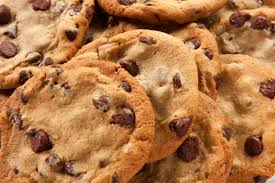

Classic Chocolate Chip Cookies
Welcome to my website !
Hello! Thank you for choosing MY recipe for your cookies!
Once you bake these cookies you will never want to use a different recipe

Ingredients
1 cup (2 sticks) unsalted butter, softened
3/4 cup granulated sugar
3/4 cup packed brown sugar
1 teaspoon vanilla extract
2 large eggs
2 1/4 cups all-purpose flour
1 teaspoon baking soda
1/2 teaspoon salt
2 cups semisweet chocolate chips
1 cup chopped nuts (optional)
Steps:
Step One: Preheat the oven to 375°F (190°C). Line baking sheets with parchment paper or silicone baking mats.
Step Two: In a large mixing bowl, cream together the softened butter, granulated sugar, brown sugar, and vanilla extract until light and fluffy.
Step Three: Add the eggs, one at a time, beating well after each addition.
Step Four: In a separate bowl, whisk together the flour, baking soda, and salt. Gradually add the dry ingredients to the wet ingredients, mixing until just combined.
Step Five: Stir in the chocolate chips and chopped nuts (if using) until evenly distributed throughout the dough.
Step Six: Drop rounded tablespoons of dough onto the prepared baking sheets, spacing them about 2 inches apart.
Step Seven: Bake in the preheated oven for 9 to 11 minutes, or until the edges are golden brown.
Step Eight: Remove from the oven and allow the cookies to cool on the baking sheets for a few minutes before transferring them to wire racks to cool completely.